In this project, I investigated symmetric key cryptography by implementing encryption applications and analyzing the behavior of different cipher modes. I explored how Electronic Codebook (ECB), Cipher-Block Chaining (CBC), Cipher Feedback (CFB), Output Feedback (OFB), and Counter Mode (CTR) each handle data encryption differently.
The core objective was to examine two critical properties of encryption modes:
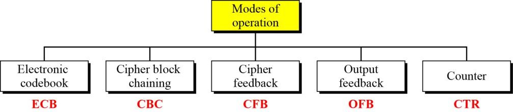
I created a Java application that implements encryption and decryption using both DES and AES algorithms across all five operation modes. The application leverages the Java Cryptography Extension (JCE) integrated within the Java 2 SE SDK, which provides mature cryptographic support with flexible mode selection.
My implementation focused on:
package com.kumar;
import javax.crypto.Cipher;
import javax.crypto.KeyGenerator;
import javax.crypto.SecretKey;
import javax.crypto.spec.IvParameterSpec;
import javax.crypto.spec.SecretKeySpec;
import java.security.NoSuchAlgorithmException;
import java.security.SecureRandom;
public class Example {
public static void main(String[] args) throws Exception {
String pText = "Group 10";
byte[] desKeyBytes = generateDESKey();
byte[] aesKeyBytes = generateAESKey();
testEncryptionModes("DES", desKeyBytes, pText.getBytes());
testEncryptionModes("AES", aesKeyBytes, pText.getBytes());
}
public static byte[] generateDESKey() throws NoSuchAlgorithmException {
KeyGenerator generator = KeyGenerator.getInstance("DES");
generator.init(56); // DES key size is 56 bits
SecretKey secretKey = generator.generateKey();
return secretKey.getEncoded();
}
public static byte[] generateAESKey() throws NoSuchAlgorithmException {
KeyGenerator generator = KeyGenerator.getInstance("AES");
generator.init(128); // AES key size is 128 bits
SecretKey secretKey = generator.generateKey();
return secretKey.getEncoded();
}
public static void testEncryptionModes(String algorithm, byte[] keyBytes, byte[] plaintext) throws Exception {
String[] modes = {"ECB", "CBC", "CFB", "OFB", "CTR"};
for (String mode : modes) {
System.out.println("opmode: " + mode);
System.out.println("input : " + "00 01 02 03 04 05 06 07 08 09 0a 0b 0c 0d 0e 0f 00 01 02 03 04 05 06 07");
Cipher cipher = Cipher.getInstance(algorithm + "/" + mode + "/PKCS5Padding");
byte[] iv = null;
if (!mode.equals("ECB")) {
iv = generateIV(cipher.getBlockSize());
}
// Encryption
if (!mode.equals("ECB")) {
if (mode.equals("CTR")) {
IvParameterSpec ivSpec = new IvParameterSpec(iv);
cipher.init(Cipher.ENCRYPT_MODE, new SecretKeySpec(keyBytes, algorithm), ivSpec);
} else {
cipher.init(Cipher.ENCRYPT_MODE, new SecretKeySpec(keyBytes, algorithm), new IvParameterSpec(iv));
}
} else {
cipher.init(Cipher.ENCRYPT_MODE, new SecretKeySpec(keyBytes, algorithm));
}
byte[] ciphertext = cipher.doFinal(plaintext);
System.out.println("cipher: " + bytesToHex(ciphertext));
// Decryption
if (!mode.equals("ECB")) {
if (mode.equals("CTR")) {
IvParameterSpec ivSpec = new IvParameterSpec(iv);
cipher.init(Cipher.DECRYPT_MODE, new SecretKeySpec(keyBytes, algorithm), ivSpec);
} else {
cipher.init(Cipher.DECRYPT_MODE, new SecretKeySpec(keyBytes, algorithm), new IvParameterSpec(iv));
}
} else {
cipher.init(Cipher.DECRYPT_MODE, new SecretKeySpec(keyBytes, algorithm));
}
byte[] decrypted = cipher.doFinal(ciphertext);
System.out.println();
}
}
public static byte[] generateIV(int blockSize) {
byte[] iv = new byte[blockSize];
new SecureRandom().nextBytes(iv);
return iv;
}
public static String bytesToHex(byte[] bytes) {
StringBuilder result = new StringBuilder();
for (byte b : bytes) {
result.append(String.format("%02X ", b));
}
return result.toString().trim();
}
}
To test pattern preservation, I encrypted plaintext containing repeated byte patterns and examined whether the resulting ciphertext exhibited the same patterns. This revealed which modes leak information about the plaintext structure.
Below are screenshots of the complete Java implementation used for testing:
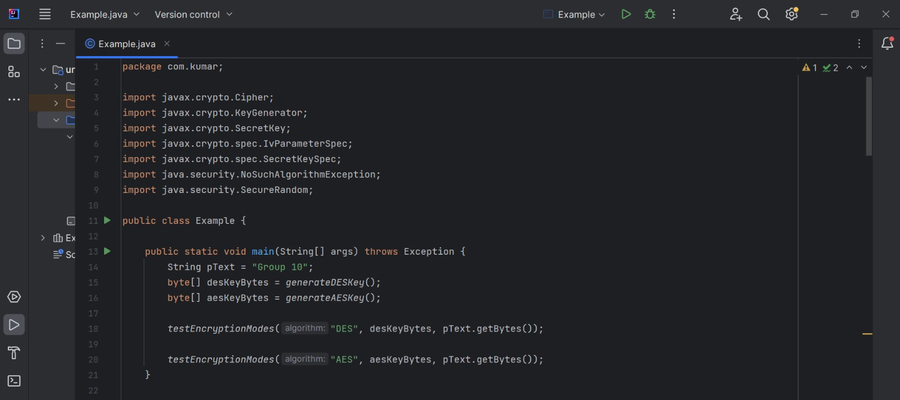
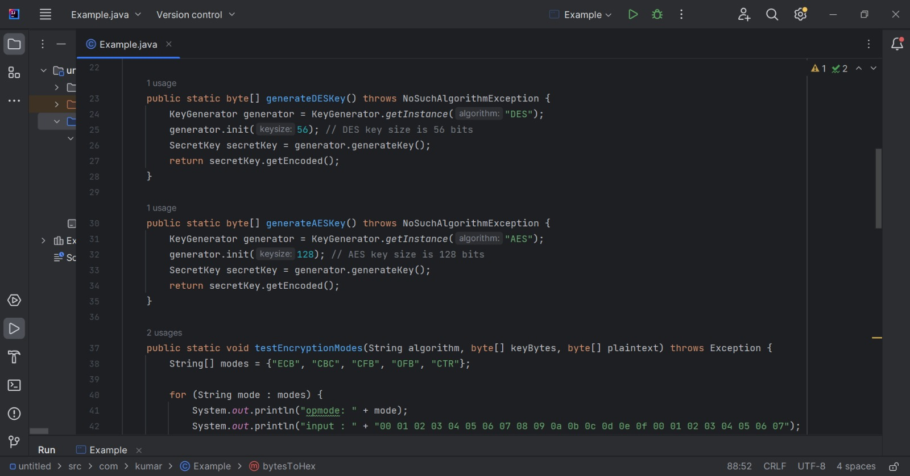
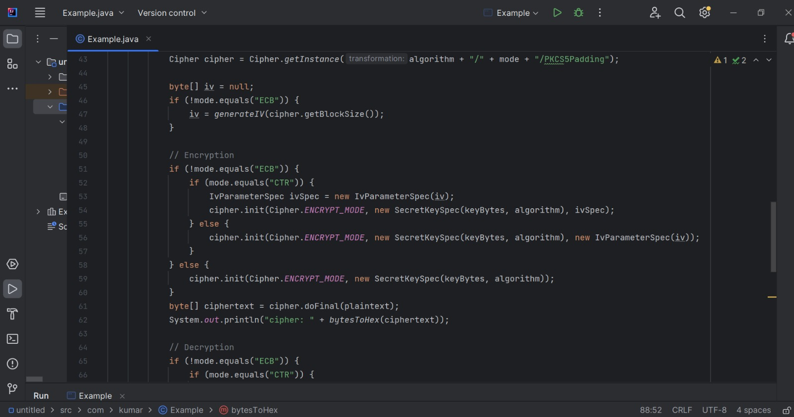
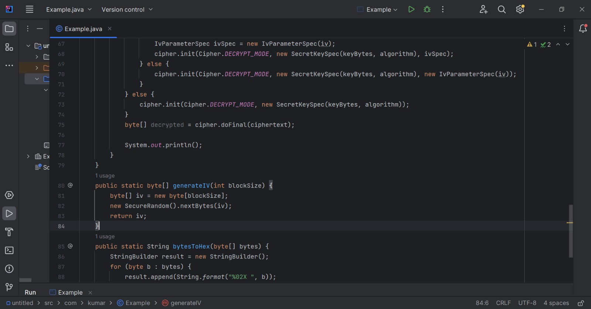
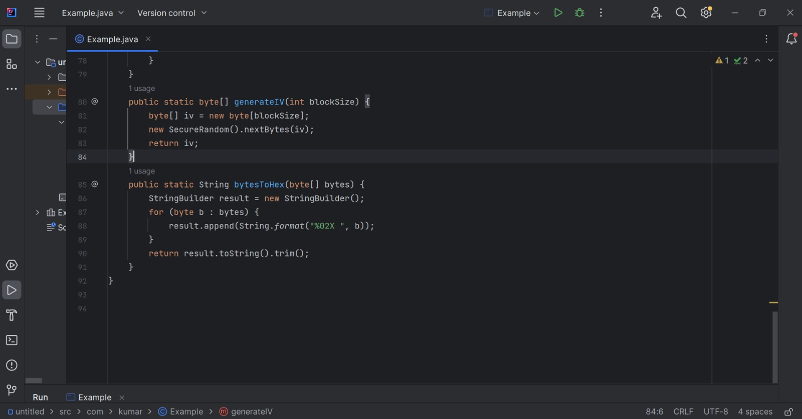
To test error propagation, I modified a single byte in the ciphertext and then decrypted it to observe how this corruption affected the resulting plaintext. This demonstrated which modes localize errors and which modes propagate them to subsequent blocks.
| Mode | Pattern Preservation | Error Propagation |
|---|---|---|
| ECB | No | No |
| CBC | Yes | Yes |
| CFB | Yes | No |
| OFB | Yes | No |
| CTR | Yes | No |
Key Findings:
I used CrypTool to analyze the frequency distribution of plaintext before and after encryption. The original document exhibited characteristic frequency patterns of English text.
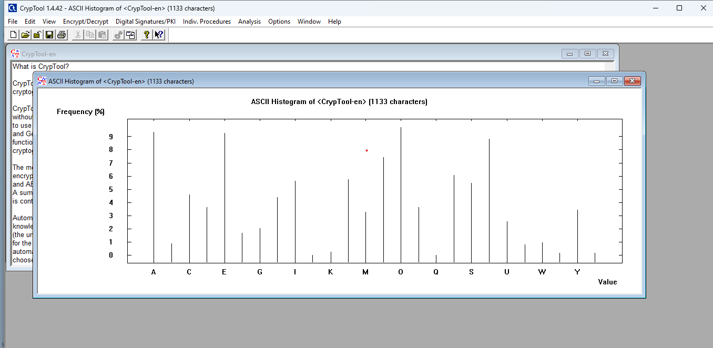
I encrypted the document using Triple DES in CBC mode with the key 12 34 AB CD.
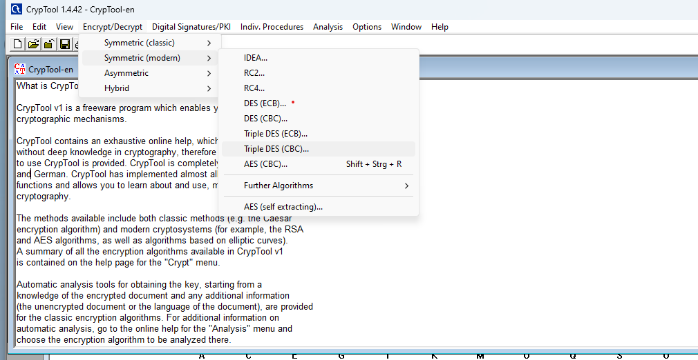
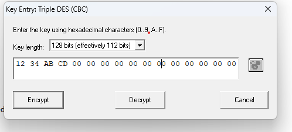
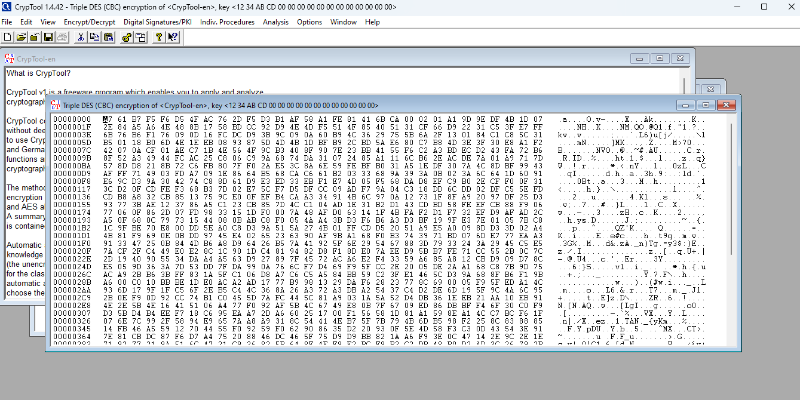
After encryption, the ciphertext was completely transformed, showing no correlation to the original plaintext.
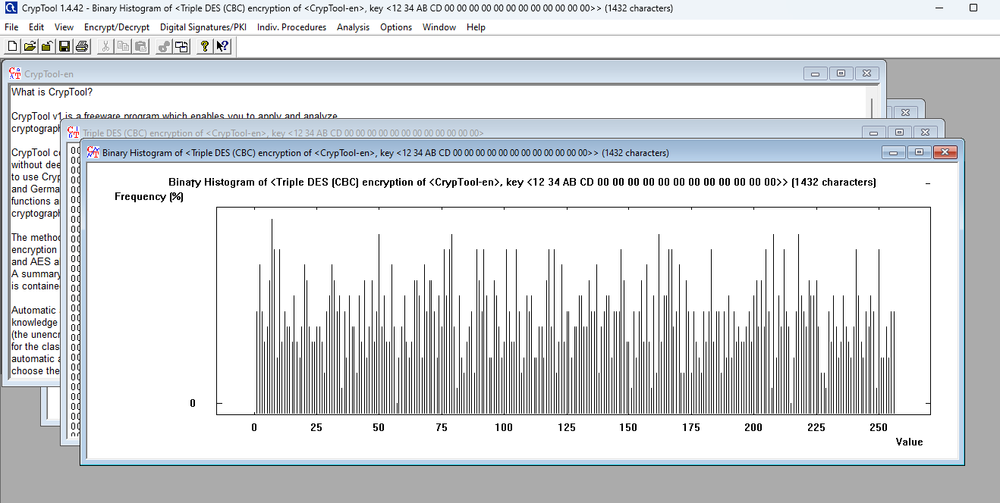
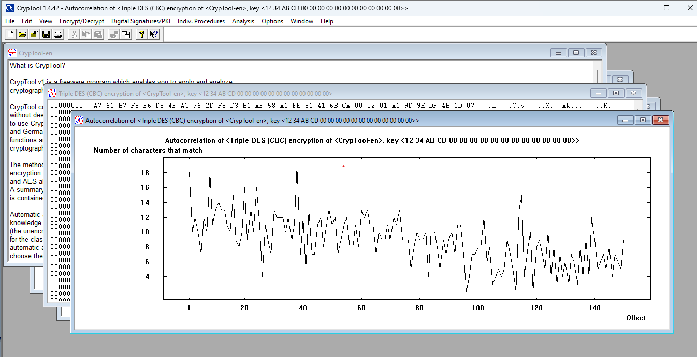
I performed a brute-force attack on the encrypted document to recover the original key. I used a partial key pattern and allowed the tool to search for the correct key: ?? ?? AB CD 00 00 00 00 00 00 00 00 00 00 00 00
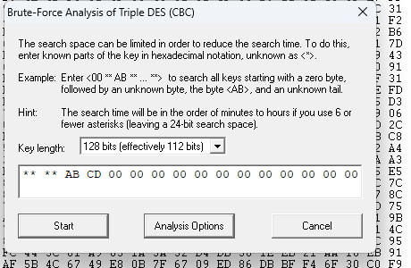
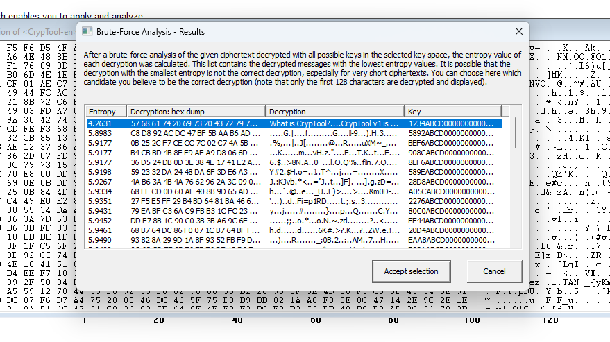
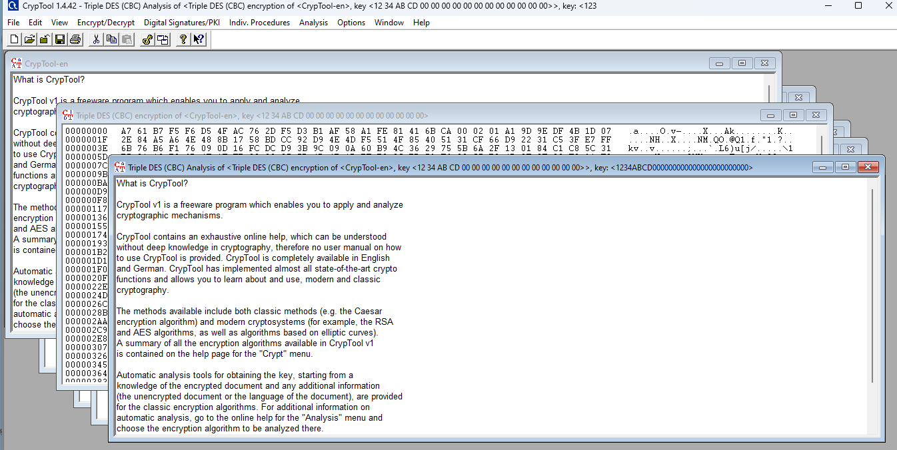
DES contains certain weak keys that reduce its security properties. I tested one such weak key (01 01 01 01 01 01 01 01) in ECB mode to demonstrate this vulnerability.
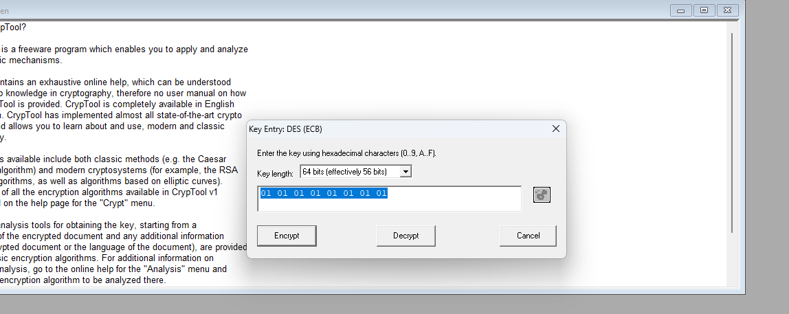
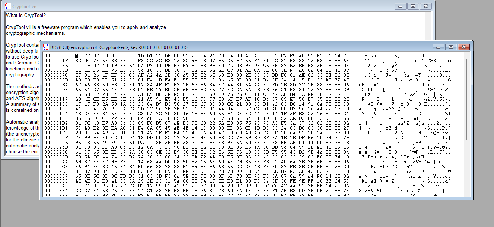
When re-encrypting the same plaintext with the same weak key and ECB mode, I observed that encryption and decryption produced unusual patterns, confirming the weak key vulnerability.
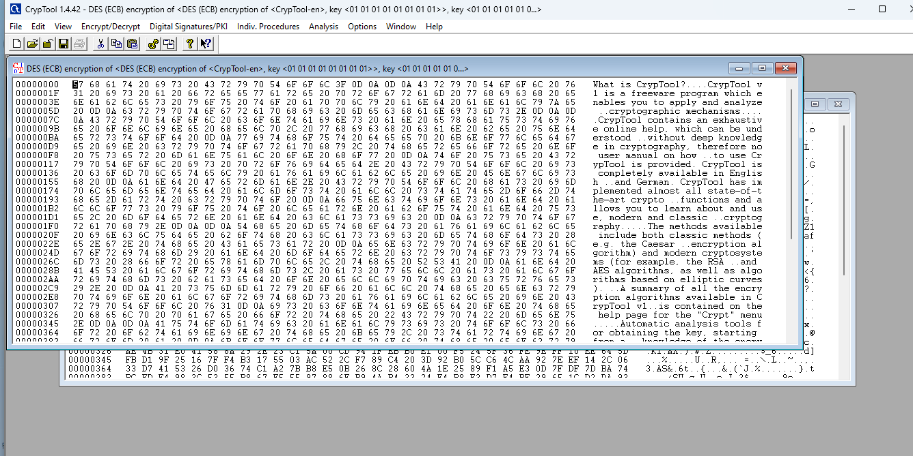
Mode Selection Matters: Not all cipher modes are created equal. ECB mode should never be used for production systems due to pattern leakage.
Error Propagation as Security Feature: While error propagation seems negative, modes like CBC use it as part of their security design to ensure changes in ciphertext affect decryption.
Pattern Concealment: Stream-oriented modes (CFB, OFB, CTR) effectively hide patterns while limiting error propagation, making them suitable for many applications.
Weak Keys Remain a Concern: Even with modern encryption, implementation details matter—understanding weak keys helps avoid accidental security vulnerabilities.
Through this project, I deepened my understanding of: - How different cipher modes operate at a fundamental level - The trade-offs between pattern concealment and error propagation - The importance of proper IV handling in stream-based and feedback modes - Real-world cryptanalysis techniques using automated tools